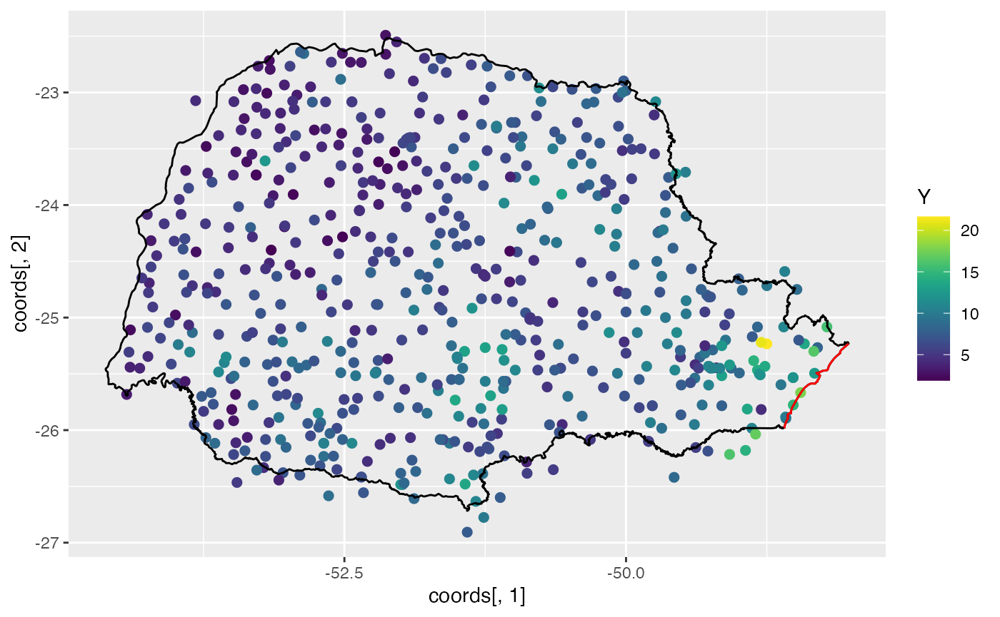
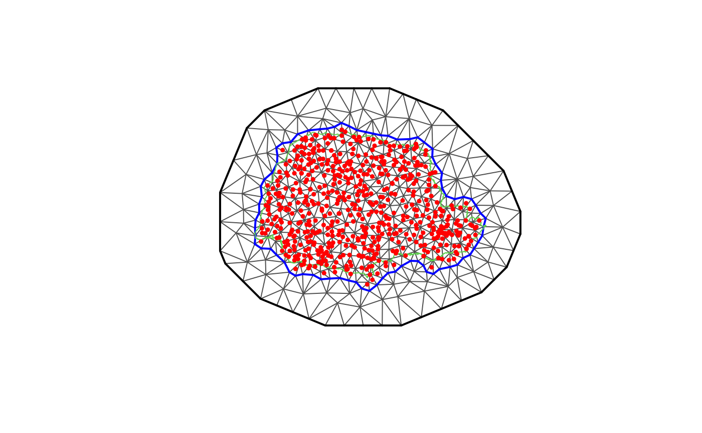
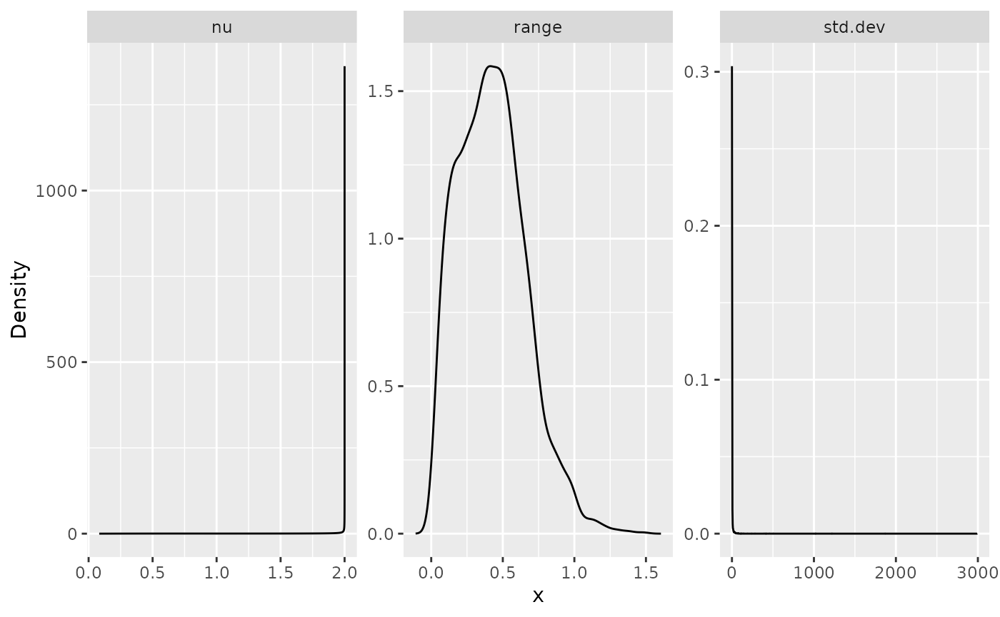
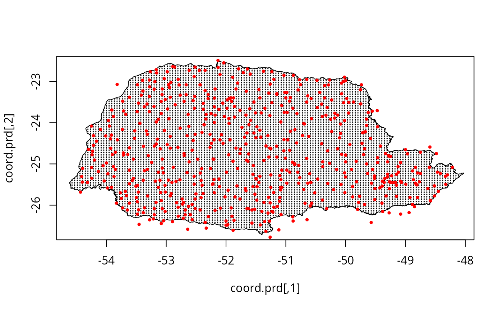
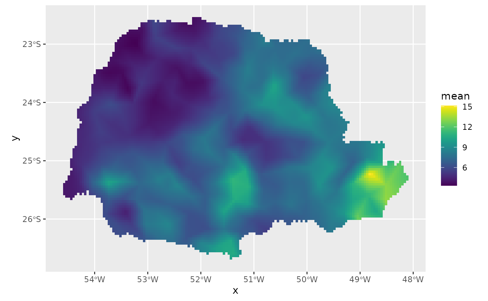
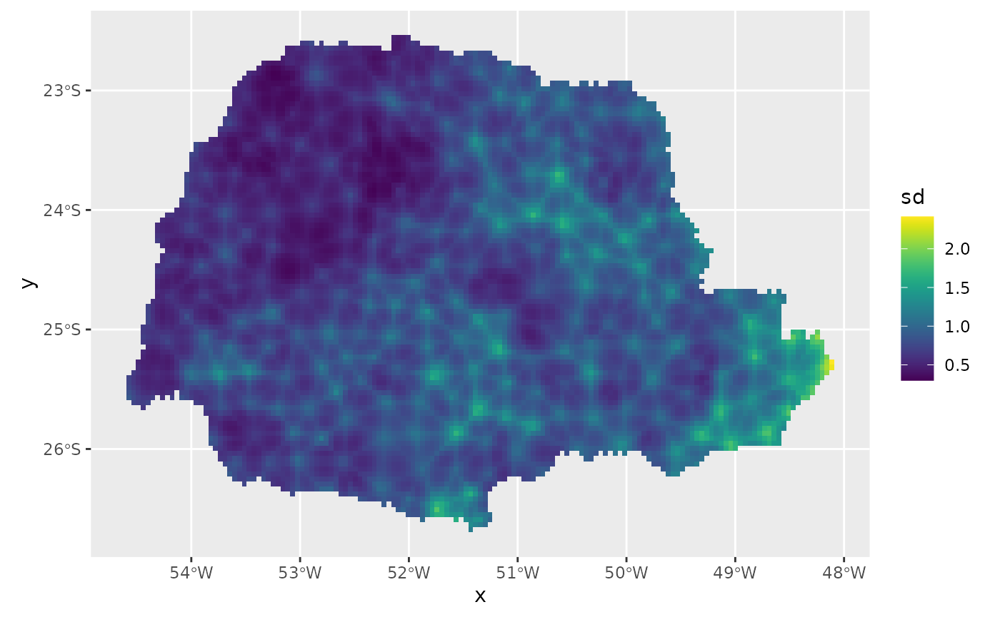
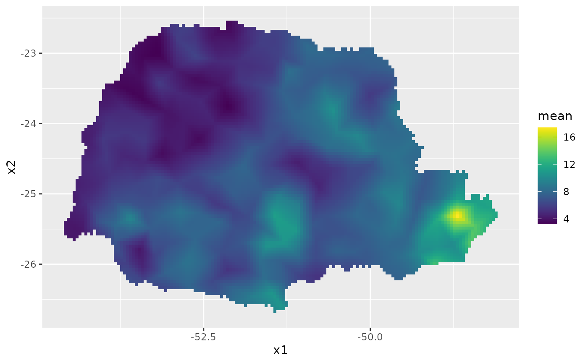
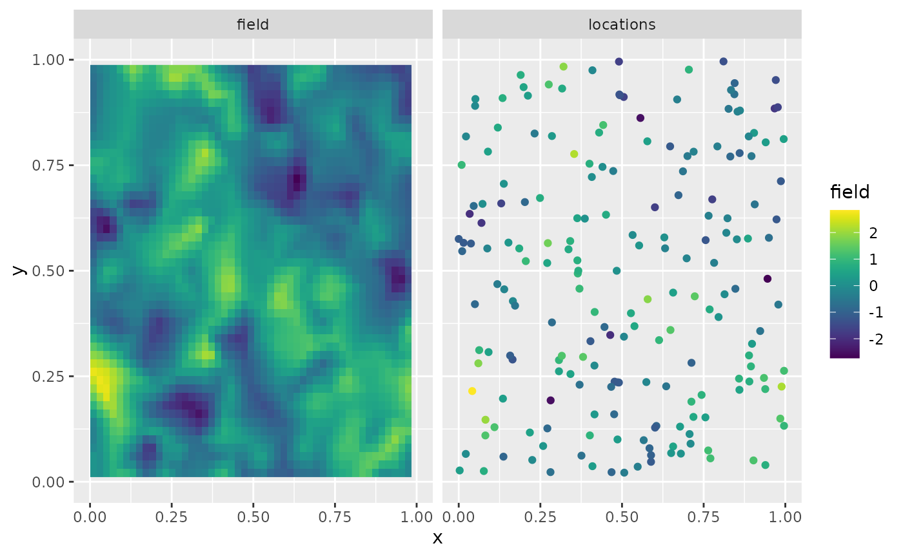
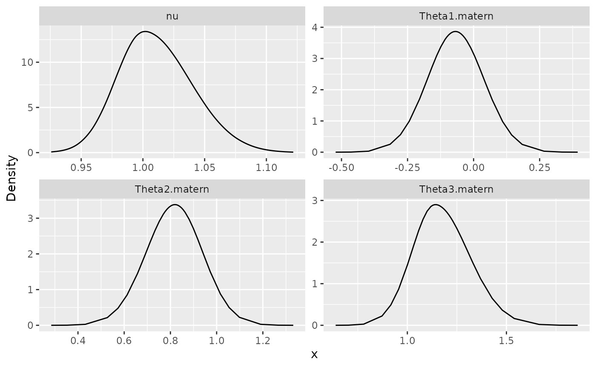

inlabru implementation of the rational SPDE approach
David Bolin and Alexandre B. Simas
Created: 2022-09-13. Last modified: 2025-03-18.
Source:vignettes/rspde_inlabru.Rmd
rspde_inlabru.RmdIntroduction
In this vignette we will present the inlabru implementation of
the covariance-based rational SPDE approach. For further technical
details on the covariance-based approach, see the Rational approximation with the rSPDE
package vignette and Bolin, Simas, and Xiong (2023).
We begin by providing a step-by-step illustration on how to use our implementation. To this end we will consider a real world data set that consists of precipitation measurements from the Paraná region in Brazil.
After the initial model fitting, we will show how to change some parameters of the model. In the end, we will also provide an example in which we have replicates.
The examples in this vignette are the same as those in the R-INLA implementation of the rational SPDE
approach vignette. As in that case, it is important to mention that
one can improve the performance by using the PARDISO solver. Please, go
to https://www.pardiso-project.org/r-inla/#license to apply
for a license. Also, use inla.pardiso() for instructions on
how to enable the PARDISO sparse library.
An example with real data
To illustrate our implementation of rSPDE in inlabru we will consider a
dataset available in R-INLA. This data has
also been used to illustrate the SPDE approach, see for instance the
book Advanced
Spatial Modeling with Stochastic Partial Differential Equations Using R
and INLA and also the vignette Spatial
Statistics using R-INLA and Gaussian Markov random fields. See also
Lindgren, Rue, and Lindström (2011) for
theoretical details on the standard SPDE approach.
The data consist of precipitation measurements from the Paraná region in Brazil and were provided by the Brazilian National Water Agency. The data were collected at 616 gauge stations in Paraná state, south of Brazil, for each day in 2011.
An rSPDE model for precipitation
We will follow the vignette Spatial
Statistics using R-INLA and Gaussian Markov random fields. As
precipitation data are always positive, we will assume it is Gamma
distributed. R-INLA
uses the following parameterization of the Gamma distribution,
In this parameterization, the distribution has expected value
and variance
,
where
is a dispersion parameter.
In this example will be modelled using a stochastic model that includes both covariates and spatial structure, resulting in the latent Gaussian model for the precipitation measurements
where
denotes the measurement taken at location
,
are covariates,
is a mean-zero Gaussian Matérn field, and
is a vector containing all parameters of the model, including smoothness
of the field. That is, by using the rSPDE model we will
also be able to estimate the smoothness of the latent field.
Examining the data
We will be using inlabru. The
inlabru package is available on CRAN and also on GitHub.
We begin by loading some libraries we need to get the data and build the plots.
Let us load the data and the border of the region
The data frame contains daily measurements at 616 stations for the year 2011, as well as coordinates and altitude information for the measurement stations. We will not analyze the full spatio-temporal data set, but instead look at the total precipitation in January, which we calculate as
Y <- rowMeans(PRprec[, 3 + 1:31])In the next snippet of code, we extract the coordinates and altitudes and remove the locations with missing values.
Let us build a plot for the precipitations:
ggplot() +
geom_point(aes(
x = coords[, 1], y = coords[, 2],
colour = Y
), size = 2, alpha = 1) +
geom_path(aes(x = PRborder[, 1], y = PRborder[, 2])) +
geom_path(aes(x = PRborder[1034:1078, 1], y = PRborder[
1034:1078,
2
]), colour = "red") +
scale_color_viridis()
The red line in the figure shows the coast line, and we expect the distance to the coast to be a good covariate for precipitation.
This covariate is not available, so let us calculate it for each observation location:
Now, let us plot the precipitation as a function of the possible covariates:
Creating the rSPDE model
To use the inlabru
implementation of the rSPDE model we need to load the
functions:
To create a rSPDE model, one would the
rspde.matern() function in a similar fashion as one would
use the inla.spde2.matern() function.
Mesh
We can use fm_mesh_2d() function from the
fmesher package for creating the mesh. Let us create a mesh
which is based on a non-convex hull to avoid adding many small triangles
outside the domain of interest:
library(fmesher)
prdomain <- fm_nonconvex_hull(coords, -0.03, -0.05, resolution = c(100, 100))
prmesh <- fm_mesh_2d(boundary = prdomain, max.edge = c(0.45, 1), cutoff = 0.2)
plot(prmesh, asp = 1, main = "")
lines(PRborder, col = 3)
points(coords[, 1], coords[, 2], pch = 19, cex = 0.5, col = "red")
Setting up the data frame
In place of a inla.stack, we can set up a
data.frame() to use inlabru. We refer the reader
to vignettes in https://inlabru-org.github.io/inlabru/index.html for
further details.
## Linking to GEOS 3.12.1, GDAL 3.8.4, PROJ 9.4.0; sf_use_s2() is TRUE
prdata <- data.frame(long = coords[,1], lat = coords[,2],
seaDist = inla.group(seaDist), y = Y)
prdata <- st_as_sf(prdata, coords = c("long", "lat"), crs = 4326)Setting up the rSPDE model
To set up an rSPDEmodel, all we need is the mesh. By
default it will assume that we want to estimate the smoothness parameter
and to do a covariance-based rational approximation of order 2.
Later in this vignette we will also see other options for setting up
rSPDE models such as keeping the smoothness parameter fixed
and/or increasing the order of the covariance-based rational
approximation.
Therefore, to set up a model all we have to do is use the
rspde.matern() function:
rspde_model <- rspde.matern(mesh = prmesh)Notice that this function is very reminiscent of R-INLA’s
inla.spde2.matern() function.
We will assume the following linkage between model components and observations will then be used in the observation-likelihood,
Model fitting
We will build a model using the distance to the sea
as a covariate through an improper CAR(1) model with
,
which R-INLA calls a
random walk of order 1. We will fit it in inlabru’s
style:
cmp <- y ~ Intercept(1) + distSea(seaDist, model="rw1") +
field(geometry, model = rspde_model)To fit the model we simply use the bru() function:
inlabru results
We can look at some summaries of the posterior distributions for the parameters, for example the fixed effects (i.e. the intercept) and the hyper-parameters (i.e. dispersion in the gamma likelihood, the precision of the RW1, and the parameters of the spatial field):
summary(rspde_fit)## inlabru version: 2.12.0
## INLA version: 25.03.13
## Components:
## Intercept: main = linear(1), group = exchangeable(1L), replicate = iid(1L), NULL
## distSea: main = rw1(seaDist), group = exchangeable(1L), replicate = iid(1L), NULL
## field: main = cgeneric(geometry), group = exchangeable(1L), replicate = iid(1L), NULL
## Likelihoods:
## Family: 'Gamma'
## Tag: ''
## Data class: 'sf', 'data.frame'
## Response class: 'numeric'
## Predictor: y ~ .
## Used components: effects[Intercept, distSea, field], latent[]
## Time used:
## Pre = 0.423, Running = 7.69, Post = 0.122, Total = 8.24
## Fixed effects:
## mean sd 0.025quant 0.5quant 0.975quant mode kld
## Intercept 1.944 0.047 1.852 1.944 2.035 1.944 0
##
## Random effects:
## Name Model
## distSea RW1 model
## field CGeneric
##
## Model hyperparameters:
## mean sd 0.025quant
## Precision-parameter for the Gamma observations 13.96 0.973 12.131
## Precision for distSea 8233.72 5084.613 2389.305
## Theta1 for field -2.03 1.209 -4.703
## Theta2 for field 1.50 0.365 0.850
## Theta3 for field 0.72 1.013 -0.973
## 0.5quant 0.975quant mode
## Precision-parameter for the Gamma observations 13.923 15.959 13.866
## Precision for distSea 6983.849 21533.263 5086.361
## Theta1 for field -1.925 -0.017 -1.412
## Theta2 for field 1.475 2.279 1.370
## Theta3 for field 0.636 2.957 0.217
##
## Deviance Information Criterion (DIC) ...............: 2483.36
## Deviance Information Criterion (DIC, saturated) ....: 710.12
## Effective number of parameters .....................: 96.84
##
## Watanabe-Akaike information criterion (WAIC) ...: 2485.77
## Effective number of parameters .................: 86.63
##
## Marginal log-Likelihood: -1257.93
## is computed
## Posterior summaries for the linear predictor and the fitted values are computed
## (Posterior marginals needs also 'control.compute=list(return.marginals.predictor=TRUE)')Let , and . In terms of the SPDE where , we have that and by default The number 4 comes from the upper bound for , which is discussed in R-INLA implementation of the rational SPDE approach vignette.
In general, we have where is the value of the upper bound for the smoothness parameter .
Another choice for prior for is a truncated lognormal distribution and is also discussed in R-INLA implementation of the rational SPDE approach vignette.
inlabru results in the original scale
We can obtain outputs with respect to parameters in the original
scale by using the function rspde.result():
result_fit <- rspde.result(rspde_fit, "field",
rspde_model)
summary(result_fit)## mean sd 0.025quant 0.5quant 0.975quant mode
## tau 0.239043 0.270575 0.00935449 0.150782 0.976822 0.0204232
## kappa 4.778440 1.907360 2.35021000 4.337140 9.685140 3.5953300
## nu 1.279690 0.377920 0.55087900 1.295240 1.898640 1.4582900We can also plot the posterior densities. To this end we will use the
gg_df() function, which creates ggplot2
user-friendly data frames:
posterior_df_fit <- gg_df(result_fit)
ggplot(posterior_df_fit) + geom_line(aes(x = x, y = y)) +
facet_wrap(~parameter, scales = "free") + labs(y = "Density")
We can also obtain the summary on a different parameterization by
setting the parameterization argument on the
rspde.result() function:
result_fit_matern <- rspde.result(rspde_fit, "field",
rspde_model, parameterization = "matern")
summary(result_fit_matern)## mean sd 0.025quant 0.5quant 0.975quant mode
## std.dev 0.336783 0.0895776 0.215170 0.324659 0.550852 0.318220
## range 0.702820 0.2086610 0.353481 0.681362 1.171370 0.631574
## nu 1.279690 0.3779200 0.550879 1.295240 1.898640 1.458290In a similar manner, we can obtain posterior plots on the
matern parameterization:
posterior_df_fit_matern <- gg_df(result_fit_matern)
ggplot(posterior_df_fit_matern) + geom_line(aes(x = x, y = y)) +
facet_wrap(~parameter, scales = "free") + labs(y = "Density")
Predictions
Let us now obtain predictions (i.e. do kriging) of the expected precipitation on a dense grid in the region.
We begin by creating the grid in which we want to do the predictions.
To this end, we can use the fm_evaluator() function:
nxy <- c(150, 100)
projgrid <- fm_evaluator(prmesh,
xlim = range(PRborder[, 1]),
ylim = range(PRborder[, 2]), dims = nxy
)This lattice contains 150 × 100 locations. One can easily change the
resolution of the kriging prediction by changing nxy. Let
us find the cells that are outside the region of interest so that we do
not plot the estimates there.
Let us plot the locations that we will do prediction:
coord.prd <- projgrid$lattice$loc[xy.in, ]
plot(coord.prd, type = "p", cex = 0.1)
lines(PRborder)
points(coords[, 1], coords[, 2], pch = 19, cex = 0.5, col = "red")
Let us now create a data.frame() of the coordinates:
coord.prd.df <- data.frame(x1 = coord.prd[,1],
x2 = coord.prd[,2])
coord.prd.df <- st_as_sf(coord.prd.df, coords = c("x1", "x2"),
crs = 4326)Since we are using distance to the sea as a covariate, we also have
to calculate this covariate for the prediction locations. Finally, we
add the prediction location to our prediction data.frame(),
namely, coord.prd.df:
seaDist.prd <- apply(spDists(coord.prd,
PRborder[1034:1078, ],
longlat = TRUE
), 1, min)
coord.prd.df$seaDist <- seaDist.prdFinally, we plot the results. First the predicted mean:
ggplot() + gg(pred_obs, geom = "tile",
aes(fill = mean)) +
geom_raster() +
scale_fill_viridis()
Then, the std. deviations:
ggplot() + gg(pred_obs, geom = "tile",
aes(fill = sd)) +
geom_raster() +
scale_fill_viridis()
An example with replicates
For this example we will simulate a data with replicates. We will use
the same example considered in the Rational
approximation with the rSPDE package vignette (the only
difference is the way the data is organized). We also refer the reader
to this vignette for a description of the function
matern.operators(), along with its methods (for instance,
the simulate() method).
Simulating the data
Let us consider a simple Gaussian linear model with 30 independent replicates of a latent spatial field , observed at the same locations, , for each replicate. For each we have
where are iid normally distributed with mean 0 and standard deviation 0.1.
We use the basis function representation of
to define the
matrix linking the point locations to the mesh. We also need to account
for the fact that we have 30 replicates at the same locations. To this
end, the
matrix we need can be generated by spde.make.A() function.
The reason being that we are sampling
directly and not the latent vector described in the introduction of the
Rational approximation with the
rSPDE package vignette.
We begin by creating the mesh:
m <- 200
loc_2d_mesh <- matrix(runif(m * 2), m, 2)
mesh_2d <- fm_mesh_2d(
loc = loc_2d_mesh,
cutoff = 0.05,
offset = c(0.1, 0.4),
max.edge = c(0.05, 0.5)
)
plot(mesh_2d, main = "")
points(loc_2d_mesh[, 1], loc_2d_mesh[, 2])
We then compute the
matrix, which is needed for simulation, and connects the observation
locations to the mesh. To this end we will use the
spde.make.A() helper function, which is a wrapper that uses
the functions fm_basis(), fm_block() and
fm_row_kron() from the fmesher package.
n.rep <- 30
A <- spde.make.A(
mesh = mesh_2d,
loc = loc_2d_mesh,
index = rep(1:m, times = n.rep),
repl = rep(1:n.rep, each = m)
)Notice that for the simulated data, we should use the
matrix from spde.make.A() function instead of the
rspde.make.A().
We will now simulate a latent process with standard deviation
and range
.
We will use
so that the model has an exponential covariance function. To this end we
create a model object with the matern.operators()
function:
nu <- 0.5
sigma <- 1
range <- 0.1
kappa <- sqrt(8 * nu) / range
tau <- sqrt(gamma(nu) / (sigma^2 * kappa^(2 * nu) * (4 * pi) * gamma(nu + 1)))
d <- 2
operator_information <- matern.operators(
mesh = mesh_2d,
nu = nu,
range = range,
sigma = sigma,
m = 2,
parameterization = "matern"
)More details on this function can be found at the Rational approximation with the rSPDE package vignette.
To simulate the latent process all we need to do is to use the
simulate() method on the operator_information
object. We then obtain the simulated data
by connecting with the
matrix and adding the gaussian noise.
set.seed(1)
u <- simulate(operator_information, nsim = n.rep)
y <- as.vector(A %*% as.vector(u)) +
rnorm(m * n.rep) * 0.1The first replicate of the simulated random field as well as the observation locations are shown in the following figure.
proj <- fm_evaluator(mesh_2d, dims = c(100, 100))
df_field <- data.frame(x = proj$lattice$loc[,1],
y = proj$lattice$loc[,2],
field = as.vector(fm_evaluate(proj,
field = as.vector(u[, 1]))),
type = "field")
df_loc <- data.frame(x = loc_2d_mesh[, 1],
y = loc_2d_mesh[, 2],
field = y[1:m],
type = "locations")
df_plot <- rbind(df_field, df_loc)
ggplot(df_plot) + aes(x = x, y = y, fill = field) +
facet_wrap(~type) + xlim(0,1) + ylim(0,1) +
geom_raster(data = df_field) +
geom_point(data = df_loc, aes(colour = field),
show.legend = FALSE) +
scale_fill_viridis() + scale_colour_viridis()
Fitting the inlabru rSPDE model
Let us then use the rational SPDE approach to fit the data.
We begin by creating the model object.
rspde_model.rep <- rspde.matern(mesh = mesh_2d,
parameterization = "spde") Let us now create the data.frame() and the vector with
the replicates indexes:
rep.df <- data.frame(y = y, x1 = rep(loc_2d_mesh[,1], n.rep),
x2 = rep(loc_2d_mesh[,2], n.rep))
rep.df <- st_as_sf(rep.df, coords = c("x1", "x2"))
repl <- rep(1:n.rep, each=m)Let us create the component and fit. It is extremely important not to
forget the replicate when fitting model with the
bru() function. It will not produce warning and might fit
some meaningless model.
cmp.rep <-
y ~ -1 + field(geometry,
model = rspde_model.rep,
replicate = repl
)
rspde_fit.rep <-
bru(cmp.rep,
data = rep.df,
family = "gaussian",
options = list(num.threads = "1:1")
)We can get the summary:
summary(rspde_fit.rep)## inlabru version: 2.12.0
## INLA version: 25.03.13
## Components:
## field: main = cgeneric(geometry), group = exchangeable(1L), replicate = iid(repl), NULL
## Likelihoods:
## Family: 'gaussian'
## Tag: ''
## Data class: 'sf', 'data.frame'
## Response class: 'numeric'
## Predictor: y ~ .
## Used components: effects[field], latent[]
## Time used:
## Pre = 0.254, Running = 59.2, Post = 4.49, Total = 64
## Random effects:
## Name Model
## field CGeneric
##
## Model hyperparameters:
## mean sd 0.025quant 0.5quant
## Precision for the Gaussian observations 92.697 4.860 83.402 92.603
## Theta1 for field -3.191 0.046 -3.279 -3.192
## Theta2 for field 3.161 0.032 3.098 3.161
## Theta3 for field -0.653 0.029 -0.712 -0.653
## 0.975quant mode
## Precision for the Gaussian observations 102.530 92.487
## Theta1 for field -3.098 -3.195
## Theta2 for field 3.223 3.161
## Theta3 for field -0.598 -0.651
##
## Deviance Information Criterion (DIC) ...............: -5249.22
## Deviance Information Criterion (DIC, saturated) ....: 10896.66
## Effective number of parameters .....................: 4894.55
##
## Watanabe-Akaike information criterion (WAIC) ...: -6355.31
## Effective number of parameters .................: 2771.07
##
## Marginal log-Likelihood: -4780.01
## is computed
## Posterior summaries for the linear predictor and the fitted values are computed
## (Posterior marginals needs also 'control.compute=list(return.marginals.predictor=TRUE)')and the summary in the user’s scale:
result_fit_rep <- rspde.result(rspde_fit.rep, "field", rspde_model.rep)
summary(result_fit_rep)## mean sd 0.025quant 0.5quant 0.975quant mode
## tau 0.041190 0.00188841 0.0377069 0.0410986 0.0451172 0.0408791
## kappa 23.600600 0.74667100 22.1674000 23.5892000 25.0995000 23.5670000
## nu 0.684493 0.01293800 0.6587660 0.6846480 0.7095750 0.6852500
result_df <- data.frame(
parameter = c("tau", "kappa", "nu"),
true = c(tau, kappa, nu),
mean = c(
result_fit_rep$summary.tau$mean,
result_fit_rep$summary.kappa$mean,
result_fit_rep$summary.nu$mean
),
mode = c(
result_fit_rep$summary.tau$mode,
result_fit_rep$summary.kappa$mode,
result_fit_rep$summary.nu$mode
)
)
print(result_df)## parameter true mean mode
## 1 tau 0.08920621 0.04118997 0.04087911
## 2 kappa 20.00000000 23.60061972 23.56697660
## 3 nu 0.50000000 0.68449331 0.68525022Let us also obtain the summary on the matern
parameterization:
result_fit_rep_matern <- rspde.result(rspde_fit.rep, "field", rspde_model.rep,
parameterization = "matern")
summary(result_fit_rep_matern)## mean sd 0.025quant 0.5quant 0.975quant mode
## std.dev 1.1029100 0.01180590 1.079770 1.1029100 1.126370 1.1034700
## range 0.0992941 0.00354674 0.092623 0.0992099 0.106468 0.0990441
## nu 0.6844930 0.01293800 0.658766 0.6846480 0.709575 0.6852500
result_df_matern <- data.frame(
parameter = c("std_dev", "range", "nu"),
true = c(sigma, range, nu),
mean = c(
result_fit_rep_matern$summary.std.dev$mean,
result_fit_rep_matern$summary.range$mean,
result_fit_rep_matern$summary.nu$mean
),
mode = c(
result_fit_rep$summary.std.dev$mode,
result_fit_rep$summary.range$mode,
result_fit_rep$summary.nu$mode
)
)
print(result_df_matern)## parameter true mean mode
## 1 std_dev 1.0 1.10291067 0.6852502
## 2 range 0.1 0.09929414 0.6852502
## 3 nu 0.5 0.68449331 0.6852502An example with a non-stationary model
Our goal now is to show how one can fit model with non-stationary (std. deviation) and non-stationary (a range parameter). One can also use the parameterization in terms of non-stationary SPDE parameters and .
For this example we will consider simulated data.
Simulating the data
Let us consider a simple Gaussian linear model with a latent spatial field , defined on the rectangle , where the std. deviation and range parameter satisfy the following log-linear regressions: where . We assume the data is observed at locations, . For each we have
where are iid normally distributed with mean 0 and standard deviation 0.1.
We begin by defining the domain and creating the mesh:
rec_domain <- cbind(c(0, 1, 1, 0, 0) * 10, c(0, 0, 1, 1, 0) * 5)
mesh <- fm_mesh_2d(loc.domain = rec_domain, cutoff = 0.1,
max.edge = c(0.5, 1.5), offset = c(0.5, 1.5))We follow the same structure as INLA. However,
INLA only allows one to specify B.tau and
B.kappa matrices, and, in INLA, if one wants
to parameterize in terms of range and standard deviation one needs to do
it manually. Here we provide the option to directly provide the matrices
B.sigma and B.range.
The usage of the matrices B.tau and B.kappa
are identical to the corresponding ones in
inla.spde2.matern() function. The matrices
B.sigma and B.range work in the same way, but
they parameterize the stardard deviation and range, respectively.
The columns of the B matrices correspond to the same
parameter. The first column does not have any parameter to be estimated,
it is a constant column.
So, for instance, if one wants to share a parameter with both
sigma and range (or with both tau
and kappa), one simply let the corresponding column to be
nonzero on both B.sigma and B.range (or on
B.tau and B.kappa).
We will assume
,
and
.
Let us now build the model to obtain the sample with the
spde.matern.operators() function:
nu <- 0.8
true_theta <- c(0,1, 1)
B.sigma = cbind(0, 1, 0, (mesh$loc[,1] - 5) / 10)
B.range = cbind(0, 0, 1, (mesh$loc[,1] - 5) / 10)
# SPDE model
op_cov_ns <- spde.matern.operators(mesh = mesh,
theta = true_theta,
nu = nu,
B.sigma = B.sigma,
B.range = B.range, m = 2,
parameterization = "matern")Let us now sample the data with the simulate()
method:
Let us now obtain 600 random locations on the rectangle and compute the matrix:
m <- 600
loc_mesh <- cbind(runif(m) * 10, runif(m) * 5)
A <- spde.make.A(
mesh = mesh,
loc = loc_mesh
)We can now generate the response vector y:
Fitting the inlabru rSPDE model
Let us then use the rational SPDE approach to fit the data.
We begin by creating the model object. We are creating a new one so that we do not start the estimation at the true values.
rspde_model_nonstat <- rspde.matern(mesh = mesh,
B.sigma = B.sigma,
B.range = B.range,
parameterization = "matern") Let us now create the data.frame() and the vector with
the replicates indexes:
nonstat_df <- data.frame(y = y, x1 = loc_mesh[,1],
x2 = loc_mesh[,2])
nonstat_df <- st_as_sf(nonstat_df, coords = c("x1", "x2"))Let us create the component and fit. It is extremely important not to
forget the replicate when fitting model with the
bru() function. It will not produce warning and might fit
some meaningless model.
cmp_nonstat <-
y ~ -1 + field(geometry,
model = rspde_model_nonstat
)
rspde_fit_nonstat <-
bru(cmp_nonstat,
data = nonstat_df,
family = "gaussian",
options = list(verbose = FALSE,
num.threads = "1:1")
)We can get the summary:
summary(rspde_fit_nonstat)## inlabru version: 2.12.0
## INLA version: 25.03.13
## Components:
## field: main = cgeneric(geometry), group = exchangeable(1L), replicate = iid(1L), NULL
## Likelihoods:
## Family: 'gaussian'
## Tag: ''
## Data class: 'sf', 'data.frame'
## Response class: 'numeric'
## Predictor: y ~ .
## Used components: effects[field], latent[]
## Time used:
## Pre = 0.23, Running = 12.6, Post = 0.177, Total = 13
## Random effects:
## Name Model
## field CGeneric
##
## Model hyperparameters:
## mean sd 0.025quant 0.5quant
## Precision for the Gaussian observations 105.192 9.694 87.623 104.674
## Theta1 for field -0.103 0.139 -0.374 -0.104
## Theta2 for field 0.771 0.142 0.515 0.764
## Theta3 for field 1.086 0.212 0.650 1.092
## Theta4 for field -0.035 0.169 -0.381 -0.031
## 0.975quant mode
## Precision for the Gaussian observations 125.760 103.490
## Theta1 for field 0.173 -0.109
## Theta2 for field 1.073 0.730
## Theta3 for field 1.485 1.119
## Theta4 for field 0.283 -0.010
##
## Deviance Information Criterion (DIC) ...............: -739.24
## Deviance Information Criterion (DIC, saturated) ....: 945.29
## Effective number of parameters .....................: 344.41
##
## Watanabe-Akaike information criterion (WAIC) ...: -772.02
## Effective number of parameters .................: 235.54
##
## Marginal log-Likelihood: -14.91
## is computed
## Posterior summaries for the linear predictor and the fitted values are computed
## (Posterior marginals needs also 'control.compute=list(return.marginals.predictor=TRUE)')We can obtain outputs with respect to parameters in the original
scale by using the function rspde.result():
result_fit_nonstat <- rspde.result(rspde_fit_nonstat, "field", rspde_model_nonstat)
summary(result_fit_nonstat)## mean sd 0.025quant 0.5quant 0.975quant mode
## Theta1.matern -0.103413 0.1388920 -0.373687 -0.104491 0.173208 -0.109067
## Theta2.matern 0.771449 0.1422050 0.515137 0.764337 1.072540 0.730106
## Theta3.matern 1.085560 0.2120960 0.650208 1.091530 1.484620 1.118520
## nu 0.982646 0.0833706 0.813306 0.985383 1.139510 0.994554Let us compare the mean to the true values of the parameters:
summ_res_nonstat <- summary(result_fit_nonstat)
result_df <- data.frame(
parameter = result_fit_nonstat$params,
true = c(true_theta, nu),
mean = summ_res_nonstat[,1],
mode = summ_res_nonstat[,6]
)
print(result_df)## parameter true mean mode
## 1 Theta1.matern 0.0 -0.103413 -0.109067
## 2 Theta2.matern 1.0 0.771449 0.730106
## 3 Theta3.matern 1.0 1.085560 1.118520
## 4 nu 0.8 0.982646 0.994554We can also plot the posterior densities. To this end we will use the
gg_df() function, which creates ggplot2
user-friendly data frames:
posterior_df_fit <- gg_df(result_fit_nonstat)
ggplot(posterior_df_fit) + geom_line(aes(x = x, y = y)) +
facet_wrap(~parameter, scales = "free") + labs(y = "Density")
Comparing the results by cross-validation
We can compare the models fitted by inlabru by using the
function cross_validation(). To illustrate, we will
consider the nonstationary model rspde_fit_nonstat fitted
in the previous example and a stationary fit of the same dataset.
Let us, then, fit a stationary model with the previous dataset. We start by defining the stationary model:
rspde_model_stat <- rspde.matern(mesh = mesh)Then, inlabru’s component:
cmp_stat <-
y ~ -1 + field(geometry,
model = rspde_model_stat
)We can now fit the model:
rspde_fit_stat <-
bru(cmp_stat,
data = nonstat_df,
family = "gaussian",
options = list(verbose = FALSE,
num.threads = "1:1")
)To perform cross-validation, we create a list with the fitted models,
and we pass this list to the cross_validation() function.
It is also important to create a named list, so that the output has
meaningful names for the models. We will perform a
leave percentage out cross-validation, with the default
that fits the model on 20% of the data, to predict 80% of the data.
Let us create the models list:
models <- list(stationary = rspde_fit_stat,
nonstationary = rspde_fit_nonstat)We will now run the cross-validation on the models above. We set the
cv_type to lpo to perform the leave percentage
out cross-validation, there are also the k-fold (default)
and loo options to perform k-fold and leave one out
cross-validations, respectively. Observe that by default we are
performing a pseudo cross-validation, that is, we will not refit the
model for each fold, however only the training data will be used to
perform the prediction.
cv_result <- cross_validation(models, cv_type = "lpo", print = FALSE)We can now look at the results by printing cv_result.
Observe that the best model with respect to each score is displayed in
the last row.
cv_result## Model mse mae dss
## 1 stationary 0.13622321843739 0.274915742756689 -1.06759258306948
## 2 nonstationary 0.133745938718562 0.2741466647708 -1.12949739218152
## Best nonstationary nonstationary nonstationary
## crps scrps
## 1 0.194910384210759 0.516265910864282
## 2 0.19424137068737 0.5080244219398
## nonstationary nonstationaryThe cross_validation() function also has the following
useful options:
-
return_score_foldsoption, so that the scores for each fold can be returned in order to create confidence regions for the scores. -
return_train_testTo return the train and test indexes that were used to perform the cross-validation. -
true_CVTo perform true cross-validation, that is, the data will be fit again for each fold, which is more costly. -
train_test_indexesIn which the user can provide the indexes for the train and test sets.
More details can be found in the manual page of the
cross_validation() function.
Further options of the inlabru implementation
There are several additional options that are available. For
instance, it is possible to change the order of the rational
approximation, the upper bound for the smoothness parameter (which may
speed up the fit), change the priors, change the type of the rational
approximation, among others. These options are described in the “Further
options of the rSPDE-INLA implementation”
section of the R-INLA implementation of the
rational SPDE approach vignette. Observe that all these options are
passed to the model through the rspde.matern() function,
and therefore the resulting model object can directly be used in the
bru() function, in an identical manner to the examples
above.